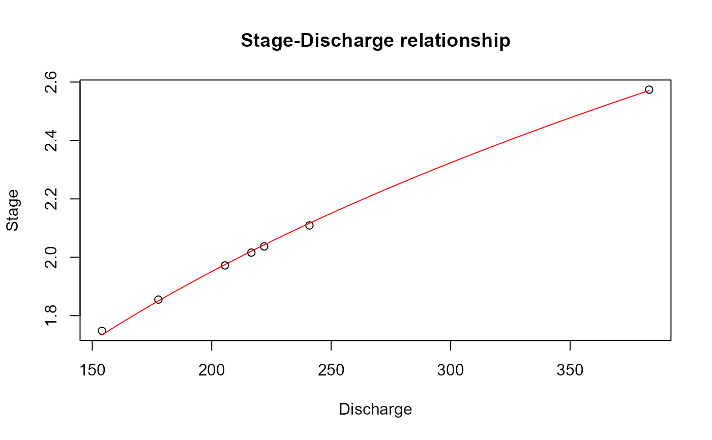
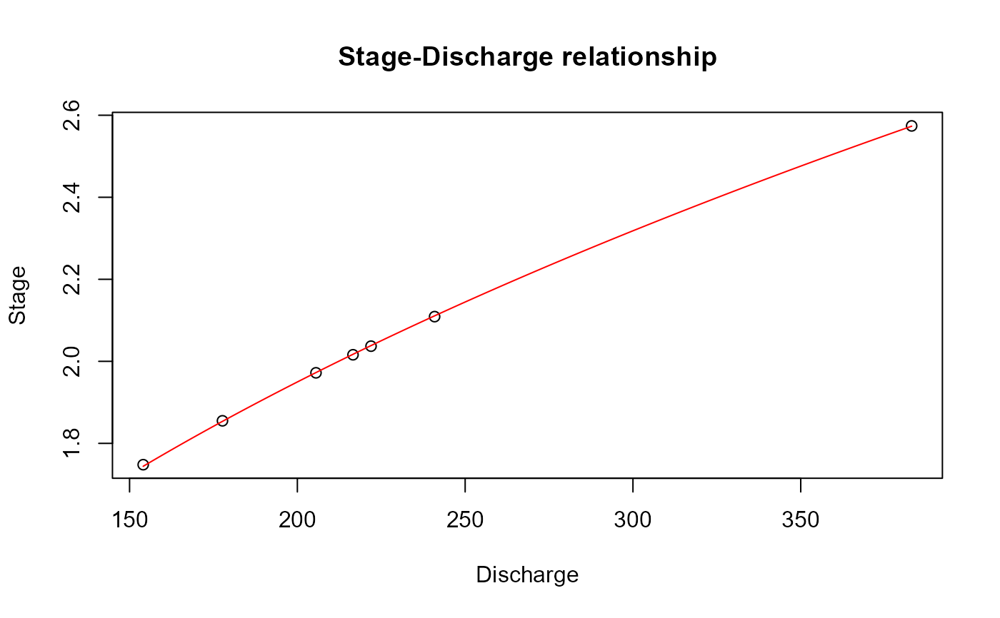

Optimises a power law rating equation from observed discharge and stage
Value
A list with three elements. The first is a vector of the three calibrated rating parameters. The second is the rating equation; discharge as a function of stage. The third is the rating equation; stage as a function of discharge. A rating plot is also returned.
Details
The power law rating equation optimised here has the form q = c(h+a)^n; where 'q' is flow, 'h' is the stage, c' and 'n' are constants, and 'a' is the stage when flow is zero. The optimisation uses all the data provided in the dataframe (x). If separate rating limbs are necessary, x can be subset per limb. i.e. the rating function would be used multiple times, once for each subset of x. There is the option, with the 'a' argument, to hold the stage correction parameter (a), at a user defined level. If 'a' is NULL it will be calibrated with 'c' & 'n' as part of the optimisation procedure. Note that this is a purely statistical procedure and hydraulic considerations may prove useful for improving results (particularly where extrapolation is required).
Examples
# Create some dummy data
flow <- c(177.685, 240.898, 221.954, 205.55, 383.051, 154.061, 216.582)
stage <- c(1.855, 2.109, 2.037, 1.972, 2.574, 1.748, 2.016)
observations <- data.frame(flow, stage)
# Apply the rating function
Rating(observations)

#> $Parameters
#> [1] 5.6020901 0.9504756 3.3562578
#>
#> $`Discharge as a function of stage`
#> [1] "Q = 5.602(h+0.95)^3.356"
#>
#> $`Stage as a function of discharge`
#> [1] "h = ((Q/5.602)^(1/3.356))-0.95"
#>
# Apply the rating function with the stage correction at zero
Rating(observations, a = 0)

#> $Parameters
#> [1] 41.873702 0.000000 2.341915
#>
#> $`Discharge as a function of stage`
#> [1] "Q = 41.874(h+0)^2.342"
#>
#> $`Stage as a function of discharge`
#> [1] "h = ((Q/41.874)^(1/2.342))-0"
#>